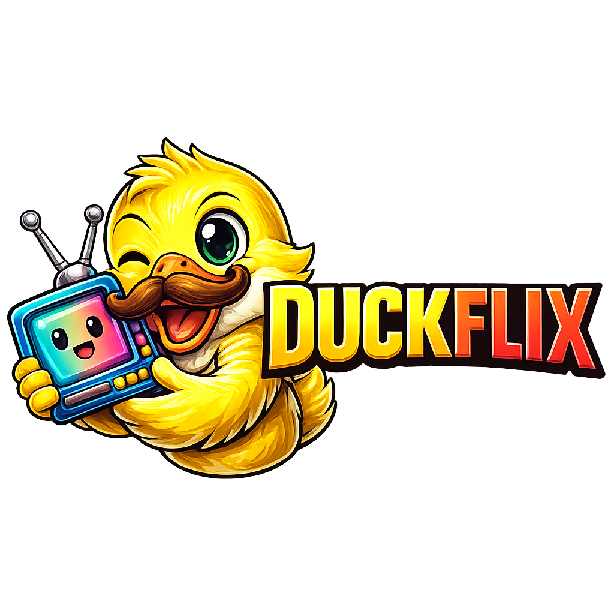

UM PLAY. VÁRIAS POSSIBILIDADES.
O que vamos explorar hoje?
Escolha seu espaço para assistir, ouvir ou ler.
VERSÃO ORIGINAL · WINDOWS
DuckFlix para Windows
Baixe a primeira versão do aplicativo DuckFlix.
DuckFlix Desktop 0.1.0
Baixar aplicativo (.exe)
Windows 64 bits
OPÇÃO PARA NAVEGADOR
RECURSO OPCIONAL · VERSÃO DE TESTE
Mais opções para assistir no computador
Teste fontes HTTP HLS com a extensão DuckFlix para Chrome e Edge.
Verificando extensão…
Baixar extensão (.zip) Como instalar e testar →